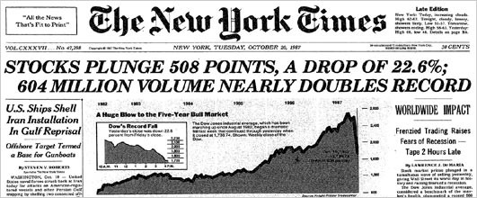

Câu chuyện về 1 ông giáo sư người Nhật và phát minh quan trọng nhất 500 năm qua
Tác giả: Daniel Jeffries
Original post: https://hackernoon.com/why-everyone-missed-the-most-important-invention-in-the-last-500-years-c90b0151c169
Chắc hẳn bạn chưa bao giờ từng nghe về Yuji Ijiri. Thế nhưng, vào năm 1989, ông đã tạo ra một thứ đáng kinh ngạc. Nó mang tính cách mạng còn hơn cả Internet, máy xe sợi bông (cách mạng công nghiệp dệt may tại Anh cuối thế kỉ 18), động cơ hơi nước, máy vi tính và điện thoại thông minh kết hợp lại.
Nếu ta xem xét hàng trăm năm đã qua, thì chỉ có phát minh về báo in và Internet là đem lại tác động lớn nhất cho nhân loại. Internet và báo in đã cho phép chúng ta dân chủ hoá thông tin; cùng với đó là sự phổ cập và nâng cao kiến thức đến người dân trên toàn thế giới.
Vậy tôi đang nói về cái gì đây? Ijiri đã tạo ra thứ gì mà đáng kinh ngạc đến vậy?
Đó chính là Kế toán Tam-phân (triple entry accounting).
Hả, cái gì? Bạn không nghe lộn đâu, tôi nói nghiêm túc đấy. Dù sao cũng đừng cảm thấy xấu hổ nếu bạn đang ngáy khò khò rồi bỏ lỡ cuộc cách mạng ấy. Nó đã không được chiếu lên TV hoặc đăng trên Kenh14.vn. Khi giáo sư Ijiri qua đời vào năm 2017, hầu hết mọi người đều chẳng biết đến cáo phó của ông. Cuốn sách nổi tiếng nhất của ông, Kế toán Động lượng và Sổ Sách Ba-bên, nhận được 0 reviews trên Goodreads (nd: trang web giới thiệu, đánh giá sách). Vì vậy, không phải chỉ mình bạn là đã bỏ lỡ nó.
Hãy thử Goole từ khóa “Kế toán Tam-phân” xem. 4970 kết quả, với cái thời của Google như hiện tại thì như vậy chẳng khác gì là không tồn tại. Những người chỉ mới xuất hiện trên Facebook hay Youtube tuần trước còn cho ra kết quả nhiều hơn thế.
Thử coi tiếp xem, đường link đầu tiên là tới Wikipedia, mà mới chỉ ở dạng sơ khai. Thứ tư xuống là một bài báo từ năm 2005, Ijiri thậm chí còn không được đề cập ở trang nhất.
Vậy tại sao nó lại quan trọng đến thế nếu chẳng ai biết về nó?
Bởi vì nó vẫn chưa được ứng dụng gì cho tới năm 2008, thế nên tác động của nó vẫn chưa xảy đến. Nhưng bạn cứ chờ mà xem, nó sẽ trở thành một cơn sóng thần càn quét và định hình lại mọi mặt của cuộc sống và xã hội chúng ta. Làm sao tôi biết?
Để hiểu tại sao, bạn chỉ cần tìm hiểu sơ về chủ đề gợi cảm nhất của lịch sử. (nd: bạn đọc không nhầm đâu, ‘gợi cảm’, ahaha).
KẾ TOÁN: CHỦ ĐỀ GỢI CẢM NHẤT LỊCH SỬ
Nói thế này: Không có kế toán, bạn sẽ không được đọc bài viết này trên iPad của bạn, hoặc chạy xe đi làm trong khi đeo tai nghe và nghe nhạc trên Zing.mp3. Không có kế toán thì không có thương mại, không buôn bán. Nếu không có thương mại thì sẽ không có máy bay, không có tàu hỏa, máy kéo, không có động cơ hơi nước, không có tòa nhà chọc trời hay máy vi tính. Sẽ không có quốc gia, không có thuyền, không có tàu vận tải vận chuyển hàng hoá đi khắp thế giới từ những nơi xa xôi của trái đất.
Trên thực tế, không có kế toán, chắc hẳn bạn vẫn đang kiếm ăn hoặc săn bắn trong rừng.
Như bạn có thể biết, chỉ có hai lần đột phá kế toán trong toàn bộ lịch sử của thế giới trước giờ. Cả hai đều đã tạo ra những nấc thang nhận thức to lớn, nâng tầm tính phức tạp xã hội và sự cải tiến của nhân loại.
Bước đột phá đầu tiên: Kế toán Đơn
Ngày xửa ngày xưa, chúng ta vẫn chỉ đang chạy loanh quanh trong rừng đuổi theo mấy con vật, theo dấu những vì sao hoặc canh tác trên ruộng đồng. Triển vọng phát triển của chúng ta bị hạn chế. Bạn sẽ phải sống với bộ tộc hoặc gia đình, rồi bạn săn bắn và hái lượm. Cha mẹ của bạn cũng làm điều tương tự vậy, rồi cả cha mẹ của họ, và cả cha mẹ của cha mẹ họ nữa trong một chu kỳ tưởng chừng bất tận.
Và kế toán đã phá vỡ chu kỳ đó.
Lần đầu tiên trong lịch sử, chúng ta có khả năng tự đặt chân mình vào một phong cách sống khác hoàn toàn với thời chỉ dùng tay bốc đồ ăn cho vào miệng.
Bằng chứng đầu tiên của Kế toán Đơn là từ người Sumer cách đây khoảng 5000 năm trên tấm đá khắc chữ hình nêm (một hình thức chữ viết đầu tiên của nhân loại). Vâng, những người Sumer, những người đã ban tặng chúng ta Sử thi Gilgamesh, câu chuyện cổ nhất được ghi lại trong lịch sử. Những hệ thống chữ viết kiểu này này đơn giản nhưng hiệu quả. Bạn chỉ cần ghi chú vào cuốn sổ, và, tôi nợ bạn 50 đô la. Một khi bạn có thể theo dõi người ta sở hữu những gì, thì kinh doanh bắt đầu xảy ra ở quy mô lớn hơn nhiều. Đó là lý do tại sao các vị vua và hoàng hậu thời cổ đại có thể dựng nên những lâu đài, thiết lập quân đội chuyên nghiệp và tạo ra những kỳ quan tuyệt vời cho nhân loại.
Nhưng Kế toán đơn không hẳn là tốt. Nó chỉ có thể làm được tới vậy. Các kế toán viên duy nhất lúc đó là em trai của những vị vua vì nói gì thì nói, bạn chỉ có thể tin tưởng vào anh chị em mình. Tất cả những gì anh ta cần làm là gạch đi một dòng trong cuốn sổ và số tiền đó không còn tồn tại. Không có cách nào để xác minh, không có cách nào để kiểm toán, không có cách nào để các bên làm hợp đồng cả. (nói rõ ra là lúc đó văn bản chỉ do giới quý tộc giữ, nông dân tới thực hiện giao dịch, chuyện ghi chép chỉ có quý tộc thực hiện).
Điều đó có nghĩa thương mại chỉ là chuyện trong nhà. Các vị vua và hoàng hậu giao dịch với những quý tộc và là họ chiếm hầu hết số tiền cho bản thân và để lại phần còn lại cho người dân chúng ta chết đói. Đó là cách các vương triều hùng mạnh từng tồn tại một thời trong lịch sử.
Và rồi Kế toán Kép xuất hiện để cứu nhân độ thế
Phải đến năm 1400, hệ thống nhập sổ một chiều mới thể hiện sự lỗi thời của nó. Lúc ấy, bạn đã bắt đầu có những chiếc thuyền có khả năng bôn ba khắp nơi. Điều đó có nghĩa là mọi người đã có thể buôn bán với những người họ chưa bao giờ từng gặp. Vì thương mại đường biển trở thành cách thức quan trọng nhất để vận chuyển hàng hoá đến các vùng đất xa xôi, cho nên các thành phố cảng như Venice trở thành trung tâm của thế giới cổ đại và là nút giao thông cho thương mại thế giới. Nhưng với quá nhiều vụ mua bán đang diễn ra, thì kế toán đơn dần cho thấy nhiều nhược điểm. Lúc ấy người ta rất dễ làm giả sổ sách. Những cuốn sổ của người dân đã sớm trở thành một mớ hỗn độn trong vô vọng của sai sót và thất thoát. Và càng có nhiều ngành nghề xếp chồng lên nhau thì càng có nhiều sai sót xảy ra.
Nhiều nền văn minh từ người Ý vào những năm 1300, tới người Triều Tiên cổ đại, cho tới vị Caliphê Hồi giáo thứ nhì đã phát triển các phiên bản của một hệ thống nhập hai lần. Tuy nhiên các hệ thống ấy vẫn chưa đáp ứng được yêu cầu. Và khi tất cả điều kiện đã hội tụ, thì chúng ta đi đến việc tạo ra phát minh quan trọng nhất trong lịch sử nhân loại: báo in. Nếu không có nó, tri thức vẫn sẽ bị bỏ rơi, người ta dù đạt được một bước đột phá trong một lĩnh vực nào đó, nhưng rồi cũng sẽ chết đi trong quên lãng. Báo in, do vậy, đã cho phép mọi người tạo ra hàng trăm ngàn bản sao và điều đó đồng nghĩa với việc kiến thức sẽ sống sót và lưu thông, thay vì biến mất cùng người tạo ra nó.
Vào khoảng năm 1400, một thầy dòng tên là Phanxicô đã hoàn tất việc soạn thảo hệ thống nhập liệu kép, và từ đấy nó nhanh chóng trở thành tiêu chuẩn với các thương gia tại Venice. Tất cả là nhờ vào khả năng bảo quản của bản in giấy. (Hãy tưởng tượng, mỗi ngày có hàng ngàn giao dịch diễn ra, và mọi người phải viết từa lưa trên giấy da vốn chất lượng rất kém, khiến cho việc viết và lưu trữ trở nên rất bất cập, lộn xộn. Do vậy, in ấn đã khiến giấy gỗ trở nên phổ biến, văn bản được phổ cập hơn, quy củ hơn, từ đấy thương mại phát triển là dễ hiểu. Kế toán kép ở đây là văn bản nay đã được phổ biến cho cả 2 bên cùng giữ, chứ không phải kế toán đơn, một chiều như thời xưa. Ví dụ:
Kế toán đơn:
- Hôm nay thu 100 bịch sữa –> sổ bà bán tạp hóa ghi “cộng 100 bịch sữa”.
- Hôm nay bán 50 bịch giá 1000 mỗi bịch –> Sổ bà trừ 50 bịch, cộng 50.000 đồng. Này giống như bà bán tạp hóa ghi sổ vậy đó, chỉ mình bả ghi vô sổ bả.
Kế toán kép:
- Hôm nay B bán 100 con bò cho A giá 5tr đồng mỗi con–> sổ A cộng vô 100 con bò, và trừ đi 500tr đồng, đồng thời sổ B trừ 100 con bò, cộng 500tr đồng.
- Hai bên ký vào 2 biên bản mua bán, mỗi người giữ 1 tờ, để thằng kia nói xạo thì quăng tờ mình giữ cho nó coi. Tức là kế toán kép đòi hỏi sự thay đổi trong tài khoản của cả 2 bên. Bên này ghi Có thì bên kia ghi Nợ, kiểu bạn chuyển khoản cho người ta thì tài khoản bạn bị trừ, người ta được cộng vậy.
–> Kế toán kép chính thức thể hiện được mối quan hệ trao đổi buôn bán, thương mại, nói chung là đã nâng tầm cách thức con người làm kinh tế . Điều này mở ra một chương mới cho thương mại thế giới. Bây giờ hàng hoá có thể lưu chuyển dễ dàng đến tất cả các đế quốc của cựu lục địa. Và khi lướt nhanh tới hiện tại, thì ngày hôm nay chúng ta vẫn đang sử dụng một hệ thống nhập liệu kép như vậy. Nếu bạn thực hiện giao dịch chuyển khoản ngân hàng, thì bạn đang sử dụng hệ thống kế toán kép.
Nhưng bây giờ, lịch sử đã gặp lại, bản thân kế toán kép cũng cho thấy rằng nó sắp lỗi thời.
Lấy công ty Enron làm ví dụ. Họ đã làm tất cả mọi thứ để giả mạo sổ sách của mình. Họ đã quản lý để che giấu khoản nợ hàng tỷ đô la. Và đó là nơi Kế toán Tam phân bước vào.
Bình minh của Kế toán Tam phân
Hầu hết mọi người đã bỏ lỡ sự đột phá của giáo sư Ijiri vì nó nằm trên hai lĩnh vực khá mơ hồ và còn chưa phổ biến: mật mã và kế toán.
Rất hiếm khi tìm được một người có hiểu biết sâu sắc về một trong hai lĩnh vực đó, chứ chưa nói đến cả hai. Nếu không có sự hiểu biết liên ngành như vậy, không có gì ngạc nhiên khi phát minh của ông đã trôi dần vào lãng quên.
Và có một lĩnh vực mà ông ấy cũng đã đi trước thời đại của mình. Lúc đấy mã hóa vẫn còn lạ lẫm với cộng đồng. Nếu bạn làm việc trong ngành công nghệ thông tin, bạn có thể nhớ vụ scandal chip Clipper, nơi mà NSA (cơ quan tình báo quốc gia Mỹ) đã cố gắng cài mã độc vào trong tất cả các đoạn mã. Đó là chuyện của năm 1993. Ijiri xuất bản tác phẩm của ông vào năm 1989. Nó đã đi qua chừng đó thời gian mà vẫn không được ai chú ý đến.
Sau đó, vào năm 2006/ 2007, một lập trình viên tự học đã giáng một cú làm rung chuyển cả hệ thống. Anh ấy đã tạo ra một loại tiền tệ thay thế, mang tính phi tập trung (hay còn gọi là phân tán).
Nó được gọi là Bitcoin.
Bitcoin chính là ứng dụng thực tiễn đầu tiên của kế toán Tam phân.
Bây giờ tôi biết bạn nghĩ gì. Xin vui lòng không kể một câu chuyện dài dòng khác về cách Bitcoin đã thay đổi thế giới! Nhưng đảm bảo với bạn, cho dù Bitcoin tồn tại hay thất bại, thì công nghệ blockchain vẫn sẽ tiếp tục tiến bước và phát triển rực rỡ, cũng như kế toán Tam phân vậy. Các tập đoàn và chính phủ ban đầu đã chế nhạo nó thì nay đang chạy đua để áp dụng sức mạnh của nó.
Tại hội nghị thượng đỉnh gần đây tại thành phố New York, tôi đếm sơ đã thấy các tập đoàn IBM, Intel, Microsoft, Ngân hàng Trung ương Đức, Bộ Y tế và Dịch vụ Nhân sinh Hoa Kỳ, Ngân hàng Thế giới, Cơ quan tiền tệ Hồng Kông, Toyota, Fidelity và Citi bank trong số những người tham dự. JP Morgan tuyên bố họ đã kết hợp các giao thức ẩn danh của Zcash (1 loại tiền mã hóa) vào công nghệ blockchain của họ, một ý tưởng mà mới chỉ vài năm trước đây còn được cho là điên rồ.
Nhưng hãy nhớ điều này: Chúng ta chỉ đang ở giai đoạn sơ khai của những gì chúng ta có thể làm với công nghệ blockchains. Chúng ta đã chơi đủ trò với tiền mã hóa, kiếm tiền và giao dịch, nhưng tiện ích của các loại tiền tệ này trong thế giới thực vẫn còn hạn chế, nó chỉ mới quen thuộc với các nhà đầu cơ và những nhà đầu tư ban đầu. Nhưng công nghệ blockchains có thể làm được nhiều điều hơn, cùng với sự thúc đẩy của công nghệ mã hóa.
Một liều thuốc làm ta lớn bổng
Kế toán tam phân, cùng với blockchain, và mã hóa là sự tổng hợp tạo nên cách thức để chúng ta đồng thuận về một thực tế khách quan. Kế toán tam phân không phải là thực tế khách quan. Nói chung đó là một mệnh đề triết học phiền phức mà chúng ta sẽ bỏ qua ngay bây giờ.
Nói một cách đơn giản, lúc này, hai bên đồng ý về một giao kèo đã xảy ra. Bên thứ 3 xuất hiện, xác nhận cái giao dịch của 2 bên. Nó là bằng chứng cho thấy có gì đó đã xảy ra giữa hai bên, vượt quá biên lai mà mỗi bên giữ trong mục kế toán kép.
Ví dụ: A chuyển khoản online cho B, B hỏi A đã chuyển chưa, A phải chụp màn hình giao dịch của mình gửi cho B. Cái A chụp, bản chất chỉ là một cái biên lai do ngân hàng xác nhận, chứ không phải bản thân giao dịch đang xảy ra (tức là số tiền đang được chuyển đi). Nếu giả sử tiền đợi lâu không thấy, bạn sẽ phải liên hệ ngân hàng để kiểm tra rất phiền phức, bản thân bạn không có khả năng kiểm tra giao dịch đó. Điều này thể hiện sự thiếu dân chủ trong giao dịch tiền tệ, ngân hàng hoàn toàn có thể giả mạo tất cả, đó là lý do vài ngân hàng bỗng dưng sụp đổ, hay những đế chế tài chính gian lận hàng tỷ đô la.
Với kế toán tam phân, việc nắm trong tay giao dịch đã trở thành hiện thực. Bạn hoàn toàn có thể quan sát giao dịch đang diễn ra, chứ không phải là đợi tiền đi, hoặc tiền tới. Sau khi thực hiện lệnh chuyển tiền, bạn sẽ có một đường link thể hiện giao dịch đang xảy ra, bạn chỉ việc gửi link giao dịch đó cho người nhận để họ biết rằng mọi thứ vẫn ổn.
Tôi biết là đầu bạn đang lùng bùng với mớ lý thuyết này rồi. Bạn sẽ hỏi thứ này quan trọng gì chứ? Tôi mần ăn được gì với nó? Rất nhiều là khác.
Tôi đã thắng phiếu phổ thông
Thế chuyện bầu cử thì sao?
Chúng ta có hàng tá vấn đề với việc bỏ phiếu ngày nay, đối với các nền dân chủ tiên tiến thì việc bỏ phiếu còn rất nhiều sự dè chừng, đáng ngờ; chứ nếu mà nói đến các nền cộng hòa chuối (các nước phụ thuộc kinh tế vào 1 lĩnh vực như chuối, dầu hỏa,…), các nước thế giới thứ ba và các chế độ độc tài trên toàn thế giới, thì việc bỏ phiếu là hoàn toàn vô bổ. Có bao nhiêu người bỏ phiếu? Họ có thực sự đã bỏ phiếu không? Cuộc bỏ phiếu của họ có được ghi lại không? Phiếu bầu của họ phản ánh ý định của họ không? Làm thế nào để chúng ta có thể thực hiện việc kiểm phiếu lần chót, một cách dễ dàng và nhanh chóng? Chúng ta có thể tin tưởng vào cuộc kiểm toán đó không? Và đó mới chỉ là đỉnh của tảng băng trôi.
Nói chung là có rất nhiều vấn đề trong việc kiểm đếm những phiếu bầu một cách chính xác. Ngay cả vào năm 2017, hệ thống bầu cử vẫn tràn ngập sai sót, chúng ta phải phụ thuộc hoàn toàn vào sự trung thực của các cuộc kiểm tra và tính cân bằng quyền lực trong các hệ thống để ngăn ngừa gian lận. Chúng ta cũng có các máy bỏ phiếu độc quyền mà chúng ta không thể công khai kiểm tra hoặc tin tưởng, trong đó hàng loạt lỗi trong chuỗi lệnh độc quyền của máy có thể bị thay đổi.
Nếu bạn không hiểu lắm về vấn đề này, hãy xem qua bầu cử Mỹ năm 2017. Sau khi kết quả được công bố, có đến vài bang người dân kêu ca rằng có gian lận bầu cử, họ yêu cầu kiểm phiếu, huy động hàng triệu đô la, có sự chấp thuận của tòa án, cuối cùng sau hàng loạt quá trình lâu dài và tốn kém, họ cũng chả biết rằng họ làm đúng hay không, bởi kiểm phiếu thủ công hay kiểm tra máy đều chẳng đạt được sự tin tưởng tuyệt đối. Câu hỏi đặt ra là, làm sao tôi biết nếu tôi bỏ phiếu cho Clinton mà máy lại cho ra kết quả là Trump? Làm sao tôi kiểm tra kết quả đó?
Công nghệ Blockchain có thể thay đổi tất cả những điều đó bằng cách đảm bảo rằng phiếu bầu có thể được kiểm chứng chính xác và công khai.
Những gì chúng ta sẽ thấy trong tương lai không xa là việc sáp nhập hệ thống bỏ phiếu E2E (việc kiểm phiếu có thể kiểm tra từ đầu đến cuối, và các hệ thống sẽ dựa trên blockchain). E2E có nghĩa là tất cả mọi người trong toàn bộ dân số, ngay tới cử tri cá nhân, cũng đều có thể xác minh kết quả. Mọi người đều biết lá phiếu của họ đã được ghi chép chính xác và họ có thể tự kiểm tra. Họ không bị bắt phải tin tưởng ai đó nói với họ rằng chuyện kiểm phiếu là chính xác như chúng ta đang làm hôm nay. Họ cũng có thể xác minh được tất cả sự bỏ phiếu của người khác một cách chắc chắn. Nhưng bất chấp sự minh bạch tuyệt vời này, đồng thời công nghệ blockchain vẫn giữ được sự ẩn danh của người bỏ phiếu, nhằm ngăn chặn sự ép buộc và tư duy bầy đàn.
Tới giờ chúng ta vẫn chưa thực hiện được những thứ kể trên (trừ việc giữ cho lá phiếu bí mật). Chúng ta có thể công bố kết quả bầu cử nhưng chúng ta không thể chứng minh điều đó, đó là lý do tại sao Trump đôi khi tuyên bố ông ta đã giành được đa số phiếu bầu phổ thông với hai triệu phiếu nhiều hơn so với đối thủ. Hệ thống E2E sẽ thay đổi điều đó. Các chính trị gia có thể không thích điều này, bởi vì họ có lợi trong việc phán đại rằng kết quả là giả mạo, nhưng không may cho họ, bởi người dân chúng ta muốn kiện toàn quyền bỏ phiếu của mình.
Có rất nhiều ví dụ về cách mà hệ thống E2E đang được sử dụng ngày nay, chẳng hạn như công trình Helios do Ben Adida phát triển tại Trung tâm Nghiên cứu Thống kê Xã hội của Harvard. Công trình chưa sẵn sàng đóng góp nhiều vào quy mô của một cuộc bầu cử tầm quốc gia, nhưng nó đã được sử dụng ở quy mô nhỏ cho các cuộc bình bầu nhỏ lẻ khắp trường. Hãy coi đó là các bài thử nghiệm ban đầu. Mặt khác, cũng có không ít lời phê phán dành cho công nghệ blockchains, mà tôi sẽ phản biện sau đây:
Bitcoin như hội chứng hoa Tulips
Một thời hoa tulips từng tạo nên cơn sốt tại Hà Lan, nó được coi là xa xỉ, mỗi bông trị giá bằng cả 1 năm lao động của một người dân bình thường, thế rồi bùm một phát nó rơi về đúng giá trị của nó. Hội chứng hoa tulips nhằm chỉ hiện tượng một thứ bị đôn giá lên quá giá trị thực của nó.
Bạn biết câu chuyện này. Bitcoin là một cơn sốt Tulips và nó không có giá trị. Chỉ có những kẻ ngốc và những chuyên viên máy tính mới thấy nó đáng giá. Đây là một ngụy biện so sánh ẩu. Nó thể hiện sự thiếu tư duy phê phán hoàn toàn. Cứ như thể bạn đọc thấy một hai bài phê phán giật gân trên Vnexpress hoặc Vozforums và cho rằng mình đúng rồi. Đó không phải là tư duy.
Tôi khẳng định với bạn: Tulips thực sự không có giá trị nội tại. Nó chỉ là hoa. Nó đẹp và chỉ có nhiêu đó.
Mặt khác, Bitcoin đem lại một phương pháp hoàn toàn mới giúp bôi trơn các giao dịch, tạo ra những nền tảng ứng dụng phi tập trung mà bạn sẽ sử dụng hàng ngày trong vòng ba đến năm năm.
Bạn không tin ư? Hãy lấy công ty khởi nghiệp Status làm ví dụ. Status đã huy động vốn được 270 triệu đô la để phục cho việc xây dựng một ứng dụng kiểu WeChat nhưng mang tính phi tập trung. Bây giờ mọi người sẽ nói rằng không phải cứ huy động được nhiều tiền thì nó có giá trị. Dù bạn ghét hay không, thì cách thức tiếp cận của họ là thông minh. Điều đó có nghĩa là họ có thể thành công. Nguyên nhân bởi WeChat.
WeChat không nổi tiếng ở Mỹ, nhưng nó được sử dụng bởi 890 triệu người ở Trung Quốc và châu Á. Nó bắt đầu như là một ứng dụng trò chuyện nhưng bây giờ nó là nền tảng di động khổng lồ, các plugin của nó cung cấp mọi dịch vụ từ mua vé đến tìm hiểu tình trạng giao thông trước khi bạn đi mua sắm. Dân Trung Quốc dùng ứng dụng Wechat cho mọi mặt của đời sống.
Vấn đề duy nhất là WeChat không thể thực sự lan rộng ra ngoài Trung Quốc bởi vì nó bị kiểm soát tập trung bởi chế độ độc tài. Phi tập trung do vậy, sẽ chắc chắn đi một chặng đường dài để cách mạng hóa điện toán di động và đưa sức mạnh đó đến với thế giới phương Tây.
WeChat giống như Paypal/ Slack/ Stash/ Viber/ Facebook/ Twitter/ eBay/ Instagram/ Priceline/ Hotels.com tất cả tụm lại thành một vậy.
Nếu bạn nghĩ rằng tất cả các ICO (hình thức huy động vốn của các start-up) là kế hoạch Ponzi (đa cấp) và bạn không thể thấy tiềm năng trong một ứng dụng WeChat phi tập trung thì bạn chắc còn lâu mới hiểu được tiềm năng của Blockchain. Nếu Status thành công, 270 triệu USD sẽ chỉ như hạt cát trong sa mạc.
Chỉ có lũ mọt công nghệ mới mê tiền ảo thôi!
Nếu bạn ở thời mới chỉ biết tới internet, chắc hẳn bạn đã nghĩ vậy khi thằng nhóc khùng điên Jeff Bezos bắt tay tạo nên một công ty nhỏ gọi là Amazon để bán sách trên nền tảng gọi là Internet, thứ mà chả có ai ngoài lũ mọt công nghệ hiểu. Kiểu như ‘Ủa ngoài đường đang đầy rẫy tiệm sách, tự dưng mất công lên cái internet mua để làm chi?’.
Vậy còn chuyện Steve Jobs và Woz đã cùng nhau vọc vạch máy vi tính trong garage nhà họ thì sao?
Người ta thời đó còn hỏi Computer là cái quái gì? Chỉ có tụi mọt công nghệ cần nó. Cả máy vi tính lẫn internet thời ấy đều chẳng có giá trị gì mấy. Nhưng những người tiên phong ấy đã đủ thông minh để nhìn xa trông rộng, dựng nên những dự án với tâm trí đầy tò mò và nhận thấy tiềm năng của chúng trong khi người ta vẫn nhạo báng họ.
Đó cũng là những gì mà lũ khùng chúng tôi tìm thấy trong Bitcoin, tiền mã hóa và blockchain lúc này, ngay cả khi tất cả mọi người đang bỏ lỡ nó.
Nhưng… nhưng nó không ổn định
Bạn cũng biết chuyện này. Tiền mã hóa là không ổn định. Nó có thể phút chốc tan tành trong một đêm. Bạn sẽ mất rất nhiều tiền. Lập luận này chẳng cung cấp được thông tin gì bổ ích cả. Bất cứ điều gì cũng có thể tan tành qua một đêm, không có gì là miễn nhiễm.
Ai còn nhớ cuộc khủng hoảng bất động sản tại Mỹ năm 2008 không? Thị trường chứng khoán sụp đổ trong những năm 20, 80, 90? Dưới đây là chỉ số Dow Jones trong 100 năm qua để minh hoạ:

Nhìn qua sơ đồ ta có thể thấy xu hướng thị trường là tăng trong dài hạn. Trông rất tuyệt vời. Nhưng câu chuyện không chỉ có vậy.
Bạn nhìn thấy những gai nhọn chỉa xuống không? Khoảng thời gian này nhìn chung khá mượt, nhưng những dấu gạch xuống đó, tuy nhỏ bé nhưng lại là những lần mà mọi người mất rất nhiều tiền. Nếu bạn ở một trong những thời điểm đó, nó có thể làm tổn thương bạn. Nếu phóng to từng giai đoạn thì mới thấy được vấn đề. Chúng ta hãy cùng xem. Đây là phóng to vào cuộc đại suy thoái những năm 20.
Nhìn từ góc độ này là thấy nó khác hoàn toàn phải không nào? Thế còn tiêu đề bài báo này thì sao? Tiêu đề nói về cuộc khủng hoảng năm 1987, còn gọi là Thứ Hai Đen, khi mà tự dưng mọi người đi làm trở lại và phát hiện thị trường sụp đổ chỉ sau một đêm.

Đó chính là cách thị trường đầu tư vận hành. Nguy cơ cao, phần thưởng cũng lớn. Và trong khi mọi người lo lắng về sự biến động khôn lường của thị trường, thì các nhà đầu tư lão luyện lại yêu thích nó. Họ biết rằng thị trường xuống dốc là cơ hội trong khi những người mới chơi thì ca thán về việc thị trường bị thao túng và mong đợi một cách phi thực tế rằng mọi thứ sẽ cứ phát triển lên mãi. Bitcoin có vẻ khôn lường trong ngắn hạn, đó là thực tế, nhưng xu hướng dài hạn thì rõ là đang tăng lên.
Hãy đầu tư khi mọi người nghĩ rằng một cái gì đó là vô giá trị, và giữ chặt nó khi mọi người đang điên cuồng bán tháo là cách thức khiến mọi việc suôn sẻ. Đó là lý do tại sao Warren Buffet trở nên giàu có còn bạn thì không. Ông ấy mua cổ phiếu Coca khi người ta nghĩ công ty sẽ phá sản. Đó là những gì ông ấy làm. Ông ấy tìm thấy triển vọng trong những công ty bị đánh giá thấp, còn người khác thì lo bán tháo.
Nhưng… nhưng chả có gì đảm bảo cho nó cả
Một trong những công kích lớn và vô lý nhất với các loại tiền mã hóa như Bitcoin và Ethereum là chúng không có giá trị nội tại ngoại trừ niềm tin của chúng ta đặt vào chúng. Tôi không thể đếm được đã có bao nhiêu ý kiến như vậy trong rất nhiều bài báo và diễn đàn. Hãy nghe tôi nói đây:
Không có gì là có giá trị nội tại ngoại trừ cái giá trị mà chúng ta gán cho chúng cả.
Vâng, có lẽ thực phẩm, nước, nơi trú ẩn thì là có giá trị nội tại, nhưng ngoài những thứ thỏa mãn nhu cầu cơ bản đó ra, còn những thứ khác thì sao? Không nhiều. Ngay cả vàng và kim cương cũng chỉ là một đống phân trông có vẻ lấp lánh chúng ta đào lên khỏi mặt đất và chúng ta thích nó chỉ vì nó lấp lánh vậy. Nó không có giá trị thực sự và hầu như không có bất kỳ tiện ích nào.
Đồng tiền ta đang xài cũng chỉ là những mảnh giấy không hơn không kém, nó có giá trị bởi chúng ta gán giá trị cho nó. Nhưng gượm đã, bạn nói, nó được công nhận bởi chính phủ Hoa Kỳ. Đúng là vậy, nhưng nó còn giá trị gì trong một cuộc khủng hoảng nghiêm trọng? Thế bạn nghĩ tình hình Somalia hiện giờ thế nào?
Chúng ta có xu hướng nghĩ đến niềm tin (niềm tin là ‘tiền luôn luôn giá trị’) như một đặc điểm cố định. Không phải vậy. Tin tưởng là một khái niệm chuyển động. Nếu chính phủ của tôi ổn định trong năm mươi năm và sau đó một loạt các thằng khốn được bầu lên để làm những điều ngu ngốc, thì tiền trái phiếu chính phủ trở thành vô giá trị, cũng như cái chính quyền đảm bảo cho nó vậy.
Sự hậu thuẫn của một thực thể tập quyền là không có gì đảm bảo. Nhiều thời điểm trong lịch sử, tiền tệ của các quốc gia đại công nghiệp đã rơi vào suy thoái mặc dù nhận được sự hỗ trợ từ chính phủ. Hãy xem tình hình tồi tệ của nước Đức trước WWI, vốn là mầm mống dẫn trực tiếp đến WWII.
Chuyện khủng hoảng này hoàn toàn có thể lặp lại, ngay tại đây và ngay bây giờ. J.P. Morgan đã từng được Kho bạc Hoa Kỳ giải cứu chỉ vì họ phá sản. Nhưng đây là thế giới hiện đại, bạn nói. Những thứ như vậy sẽ không xảy ra nữa. Chắc chắn rồi.
Lần cuối cùng tôi kiểm tra, chúng ta chỉ mới cách bảy mươi năm kể từ cuộc thế chiến tàn phá hành tinh này, kéo sập nhiều nền kinh tế và giết chết 50 triệu người. Đó chỉ là một khoảnh khắc so với thời gian vô tận của loài người. Nếu bạn nghĩ rằng chúng ta đã tiến hoá rất nhiều kể từ đó, khi nhiều chính phủ trên thế giới đứng lên chống lại các liên minh hậu chiến, rồi xây dựng mối quan hệ khắng khít trong bảy mươi năm qua, thì tôi nghĩ là bạn vẫn còn tin vào truyện cổ tích. Truyện cổ tích ca ngợi bản chất tốt đẹp của con người. Thế nhưng bản chất con người vốn xấu xa từ xưa, và nó sẽ luôn trỗi dậy bất kỳ lúc nào.
Nhưng khoan đã, bạn nói, USD có giá trị nội tại cũng như một cửa hàng có giá trị và hơn nữa, nó còn là một phương tiện để giao dịch buôn bán! Nhưng Bitcoin và các đồng tiền mã hóa cũng đang ngày càng trở nên có giá trị khi chúng được hậu thuẫn bởi các công ty khởi nghiệp, cùng hàng ngàn ứng dụng phân quyền mà các công ty đang xây dựng cho chúng ngay bây giờ. Ngày mai chúng sẽ có giá trị hơn bởi vì chúng cung cấp quyền bỏ phiếu, chơi game, phát hành cổ phần và thậm chí cả an ninh cho các ngân hàng danh tiếng. Chừng đó đủ cho thấy nó có giá trị cao vời vợi so với cái thứ chỉ để dành mua bánh tráng trộn và hột vịt lộn. 😛
Ồ, phải nói thêm rằng xu hướng dài hạn của Bitcoin là lên, còn xu hướng dài hạn của đồng đô la Mỹ thì đang giảm. Đồng đô la cứ giảm giá trị dần dần, làm giảm sức mua của bạn như bệnh ung thư di căn trong cơ thể trong nhiều năm mà bạn không nhận thấy hoặc cảm thấy nó. Đó được gọi là lạm phát. Một ngày bạn sẽ thức dậy và tìm thấy đồng đô la của bạn có giá trị ít hơn nhiều lần bởi vì nó được thiết kế để giảm giá trị theo thời gian.
Tô phở ngày hôm qua giá 20.000, thì hôm nay đã 30.000, và mai mốt sẽ là 50.000, trong khi mức thu nhập bạn vẫn cứ giữ nguyên vậy qua năm tháng, giờ bạn hiểu lạm phát là gì rồi đấy.
Bitcoin và Ethereum không chỉ là bất kỳ tài sản nào khác, như vàng hay bạc hoặc cổ phiếu trong một công ty. Chúng là một phần của nền kinh tế. Thật khó để nhìn thấy ngay bây giờ bởi vì chúng là một phần của một nền kinh tế (thị trường tiền mã hóa) đầy biến động.
Nhưng trong năm đến mười năm, nó sẽ trở thành nền kinh tế lớn thứ ba thế giới và sau đó là nền kinh tế thứ hai, rồi cuối cùng là nền kinh tế số một thế giới. Và mọi người sẽ tự hỏi, tại sao tôi không thấy trước điều đó? Tôi ước được trở lại cái thời mà mọi người bỏ lỡ cả một rừng cây khi tất cả những gì họ thấy chỉ là vài khúc gỗ!
Hãy tưởng tượng bạn mua cổ phiếu Hoa Kỳ khi những người định cư đầu tiên đến đây và xua đuổi người Da đỏ bản xứ ra khỏi Manhattan. Hay bạn mua cổ phiếu của Apple trong những ngày đầu Steve Jobs xây dựng đế chế.
Bây giờ, bạn hãy coi lại những cổ phiếu đó có giá trị thế nào vào hôm nay?